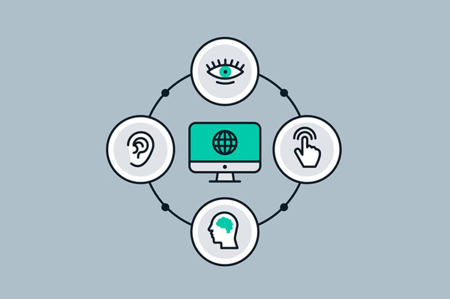

Qual a importância de deixar seu site acessível?
As pessoas estão se sentido cada vez mais confortáveis para realizar todo tipo de atividade no mundo virtual. Por isso, muito mais do que ter um design bonito e atraente, os sites precisam atender a todos. Quando uma página não está acessível, ela está fechando as portas para milhões de pessoas, indo contra o seu propósito – que é atrair mais visitantes.
Ou seja, não pensar em acessibilidade pode ser sinônimo de deixar dinheiro em cima da mesa. Vale reforçar que hoje em dia já existem recursos que permitem criar sites bonitos, funcionais e acessíveis ao mesmo tempo. Além do mais, a acessibilidade pode melhorar o seu rankeamento da sua página no Google, uma vez que o algoritmo do buscador reconhece essas práticas e o enxerga com maior relevância.
Lei Brasileira de inclusão (LBI)
Tendo isso em vista, desde 2016 a Lei Brasileira de inclusão (LBI) exige que todos os sites, públicos e privados, estejam acessíveis. Mas infelizmente apenas 1% deles seguem essa regra no Brasil. Diante disso, ter um site acessível não é só cumprir a lei, é ter um diferencial competitivo. E as organizações que saíram na frente nesse movimento já tem sido reconhecidas. A Prefeitura de São Paulo, por exemplo, lançou o seu Selo de Acessibilidade Digital justamente com esse propósito e já tem ratificado sites de empresas de todo o Brasil, como a Samsung.
Os primeiros passos para a acessibilidade
- Faça descrição alternativa das imagens, pois assim os leitores de tela poderão identificá-las e descrevê-las para os usuários cegos.
- Não use apenas cores para destacar uma informação. Isso ajudará pessoas com daltonismo, por exemplo, que não conseguiriam diferenciar os itens destacados apenas por cores.
- Simplifique seu texto. Ao fazer isso, você facilita a leitura de pessoas com dislexia.
- Crie áreas de clique maiores nos botões, isso ajudará usuários que não têm precisão nos cliques a acessar conteúdos específicos.
A W3C (World Wide Web Consortium)
A W3C é uma organização mundial que desenvolve especificações técnicas e orientações para web. Ou seja, ela quem cria e mantém os padrões para os sites na internet, incluindo os de acessibilidade. O WCAG (Web Content Accessibility Guidelines) é o seu documento que traz as diretrizes de acessibilidade para a web, explicando como tornar o conteúdo acessível para pessoas com deficiências. De acordo com elas, um site acessível segue os seguintes princípios:
- Perceptível: As informações e interface são apresentadas de uma forma que possa ser percebida;
- Operável: A Interface e a navegação devem ser operáveis para todos os usuários;
- Compreensível: A informação deve ser apresentada de forma simples e compreensível;
- Robusto: O conteúdo deve ser robusto de uma forma que possa maximizar sua compatibilidade com diferentes tipos de pessoas e tecnologias assistivas.